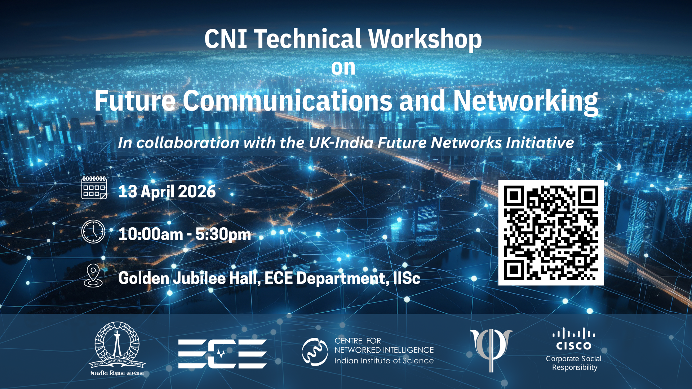
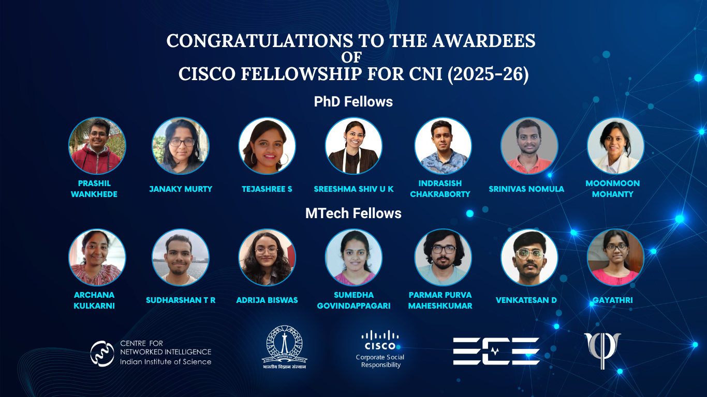

13 Apr 2026 | Future Communications and Networking WorkshopIn collaboration with the UK-India Future Networks Initiative |
11 Mar 2026 | Cisco MD Visit to CNI, ECEVisit of the Cisco Managing Director and Cisco National Security & Trust Officer to CNI |
01 Nov 2025 | The Awardees of Cisco FellowshipCNI Awarded Fellowship to 7 PhD and 7 MTech Students |
26 Sep 2025 | IndiaAI Impact Gen-AI HackathonIndiaAI Impact Gen-AI Hackathon results announced. |
20 Apr 2026, 4:00 PM — 5:00 PM
GJ Hall and Online on Zoom Zoom link: https://us06web.zoom.us/j/83388976389?pwd=XcpO3GhLxsR14a7SVbPx33HQQa1jbt.1
Dear All, Networks Seminar, supported by the Centre for Networked Intelligence, is a technical discussion forum in topics including but not limited to computer networks, machine learning, signal processing, and information theory. The seminar series has a webpage hosted at https://cni.iisc.ac.in/seminars/. You are invited to the following seminar held as part of this series. Title: The Friendship Paradox for Social Networks Speaker: Prof. Frank den Hollander, Emeritus Professor, Leiden University, Netherlands Time: 4:00 PM - 5:00 PM (IST) Date: 20 April 2026 Venue: GJ Hall and Online on Zoom Please note: A 15-minute tea/coffee break (5:00–5:15 PM) will be held before the second talk. Zoom link: https://us06web.zoom.us/j/83388976389?pwd=XcpO3GhLxsR14a7SVbPx33HQQa1jbt.1 Zoom Meeting ID: 833 8897 6389, Pass Code: NSSIISc YouTube Livestream: https://www.youtube.com/watch?v=suFGQyHiwd8 Webpage Link: https://cni.iisc.ac.in/seminars/2026-04-20/ <https://cni.iisc.ac.in/seminars/2026-04-20/> Abstract: Consider a group of individuals who form a social network. For each individual in the group compute its friendship-bias, i.e., the difference between the average number of friends of its friends and the number of its friends (all friendships are mutual) and average these numbers over all the individuals in the group. It turns out that the latter average is always non-negative and is strictly positive as soon as not all individuals have exactly the same number of friends. This fact, which at first glance seems counterintuitive, goes under the name of friendship paradox. In this talk we model the social network as a graph and explain where the friendship paradox comes from. For sequences of random graphs that converge locally in an appropriate sense, we quantify the friendship paradox by identifying the limit of the empirical distribution of the friendship-biases of all the individuals. For two examples of random graphs, we work out the properties of this limit in detail. Based on joint work with R.S. Hazra (Leiden), N. Litvak (Eindhoven) and A. Parvaneh (Bielefeld). Bio: Prof. Frank received his PhD in Mathematical Physics at the University of Leiden in 1985. From 1985 to 2024 he held positions at the universities of Delft, Utrecht, Nijmegen, Eindhoven and Leiden. In 2024 he retired and became emeritus professor at Leiden University. From 2000 to 2005, Frank was scientific director of the European research institute EURANDOM in Eindhoven, The Netherlands. From 2002 to 2007, he was chair of a Scientific Programme of the European Science Foundation, involving 13 European countries. In 2005, he was elected to the Royal Netherlands Academy of Sciences. From 2008 to 2016, he was chair of the Advisory Council for the Natural and Technical Sciences of the Royal Netherlands Academy of Sciences. In 2016, he was named Knight in the Order of the Dutch Lion. In 2018, he received a Humboldt Research Award from the Alexander Humboldt Foundation. More details: https://pub.math.leidenuniv.nl/~hollanderwtfden/ ALL ARE WELCOME. Thank you, CNI Seminar Series Organizing Committee.
20 Apr 2026, 5:15 PM — 6:15 PM
GJ Hall and Online on Zoom Zoom link: https://us06web.zoom.us/j/83388976389?pwd=XcpO3GhLxsR14a7SVbPx33HQQa1jbt.1
Dear All, Networks Seminar, supported by the Centre for Networked Intelligence, is a technical discussion forum in topics including but not limited to computer networks, machine learning, signal processing, and information theory. The seminar series has a webpage hosted at https://cni.iisc.ac.in/seminars/. You are invited to the following seminar held as part of this series. Title: Who is Important in a Network? Bringing Order to Centrality Measures Speaker: Prof. Remco van der Hofstad, Professor, Eindhoven University of Technology, Netherlands Time: 5:15 PM - 6:15 PM (IST) Date: 20 April 2026 Venue: GJ Hall and Online on Zoom Zoom link: https://us06web.zoom.us/j/83388976389?pwd=XcpO3GhLxsR14a7SVbPx33HQQa1jbt.1 Zoom Meeting ID: 833 8897 6389, Pass Code: NSSIISc YouTube Livestream: https://www.youtube.com/watch?v=LsupDZE79_g Webpage Link: https://cni.iisc.ac.in/seminars/2026-04-20-1/ <https://cni.iisc.ac.in/seminars/2026-04-20-1/> Abstract: Many phenomena in the real world can be phrased in terms of networks. Examples include the World-Wide Web, social interactions and Internet, but also the interaction patterns between proteins, food webs and citation networks. In applications, one is often interested in identifying the `important' vertices in such networks. However, being important is not uniquely defined, and as a result, a plethora of centrality measures have been, and are still being, introduced. Key examples include degree, PageRank, closeness, and betweenness centralities, each having their own benefits. The fact that there so many centrality measures calls for a mathematical investigation of their properties. In this talk, I will discuss recent work on this direction, focusing on two topics. The first topic is the recent work on large-graph limits of the PageRank distribution, and its power-law behaviour, both for directed as well as undirected graphs. The second is a method to compare centrality measures called the Centrality Comparison Curve. We assume no prior knowledge in graph theory, probability or otherwise. This joint work with George Exarchakos, Alessandro Garavaglia, Florian Henning, Nelly Litvak, Oliver Nagy, and Manish Pandey. Bio: Remco van der Hofstad received his PhD at the University of Utrecht in 1997, under the supervision of Frank den Hollander and Richard Gill. Since 2005, he is full professor in probability at Eindhoven University of Technology. Remco was scientific director of Eurandom from 2011 until 2019, and jointly with Frank den Hollander he is responsible for the ‘Random Spatial Structures’ Program at Eurandom. He wrote some 200 papers, and three books on random graphs, complex networks, and high-dimensional percolations (the latter with Markus Heydenreich). Remco received the Rollo Davidson Prize 2007, and is a laureate of the `Innovative Research VIDI Scheme' 2003 and `Innovative Research VICI Scheme' 2008. He is also one of the 11 co-applicants of the Gravitation program NETWORKS (see https://www.thenetworkcenter.nl/ for more information). In 2018, Remco was elected in the Royal Academy of Science and Arts (KNAW), where he currently is the chair of the Mathematics Section and member of the Board Natural and Technical Sciences. Remco is editor in chief of the `Network Pages', an interactive website by the networks community for everyone interested in networks (see https://www.networkpages.nl/ for more information). Remco is contact person for the research area Grip on Complexity of the Institute for Complex Molecular Systems, and the chair of the Board of Trustees of the Applied Probability Trust. More details: https://rhofstad.win.tue.nl ALL ARE WELCOME. Thank you, CNI Seminar Series Organizing Committee.
21 Apr 2026, 4:00 PM — 5:00 PM
GJ Hall and Online on Zoom Zoom link: https://us06web.zoom.us/j/83388976389?pwd=XcpO3GhLxsR14a7SVbPx33HQQa1jbt.1
Dear All, Networks Seminar, supported by the Centre for Networked Intelligence, is a technical discussion forum in topics including but not limited to computer networks, machine learning, signal processing, and information theory. The seminar series has a webpage hosted at https://cni.iisc.ac.in/seminars/. You are invited to the following seminar held as part of this series. Title: A Sanov-type Theorem for Marked Sparse Random Graphs and its Applications Speaker: Prof. Sarath Yasodharan, Assistant Professor, IIT Bombay Time: 4:00 PM - 5:00 PM (IST) Date: 21 April 2026 Venue: GJ Hall and Online on Zoom Zoom link: https://us06web.zoom.us/j/83388976389?pwd=XcpO3GhLxsR14a7SVbPx33HQQa1jbt.1 Zoom Meeting ID: 833 8897 6389, Pass Code: NSSIISc Webpage Link: https://cni.iisc.ac.in/seminars/2026-04-21/ <https://cni.iisc.ac.in/seminars/2026-04-21/> Abstract: We prove a Sanov-type large deviation principle for the component empirical measure of certain families of sparse random graphs whose vertices are marked with i.i.d. random variables. Specifically, we show that the rate function can be expressed in a fairly tractable form involving suitable relative entropies. We illustrate two applications of this result: (i) we quantify probabilities of rare events in stochastic networks on sparse random graphs, and (ii) we study Gibbs conditioning principles given suitable rare events associated with the component empirical measure. This talk is based on joint work with I-Hsun Chen, Ivan Lee, and Kavita Ramanan. Bio: Sarath Yasodharan is an Assistant Professor in Industrial Engineering and Operations Research (IEOR) at the Indian Institute of Technology Bombay. He received his PhD from the Indian Institute of Science in 2022 and was a postdoctoral research associate at Brown University from 2022-2024. His research interests are broadly in applied probability. ALL ARE WELCOME. Thank you, CNI Seminar Series Organizing Committee.
27 Apr 2026, 4:00 PM — 5:00 PM
GJ Hall and Online on Zoom Zoom link: https://us06web.zoom.us/j/83388976389?pwd=XcpO3GhLxsR14a7SVbPx33HQQa1jbt.1
Dear All, Networks Seminar, supported by the Centre for Networked Intelligence, is a technical discussion forum in topics including but not limited to computer networks, machine learning, signal processing, and information theory. The seminar series has a webpage hosted at https://cni.iisc.ac.in/seminars/. You are invited to the following seminar held as part of this series. Title: How Do Models for Disease Spread Help Us Make Better Policies? Speaker: Prof. Gautam Menon, Professor, Ashoka University Time: 4:00 PM - 5:00 PM (IST) Date: 27 April 2026 Venue: GJ Hall and Online on Zoom Tea/Coffee: 5:00 PM Zoom link: https://us06web.zoom.us/j/83388976389?pwd=XcpO3GhLxsR14a7SVbPx33HQQa1jbt.1 Zoom Meeting ID: 833 8897 6389, Pass Code: NSSIISc YouTube Livestream: https://www.youtube.com/watch?v=8hb2pUw9vqw Webpage Link: https://cni.iisc.ac.in/seminars/2026-04-27/ <https://cni.iisc.ac.in/seminars/2026-04-27/> Abstract: As a scientist who models how infectious diseases spread, understanding the usefulness of models in helping frame better health policy is important to me. Some years ago, we began to develop BharatSim, India's first ultra-large-scale agent-based simulation, initially in the context of understanding COVID-19 spread. More recently, we've demonstrated the use of BharatSim in understanding specific questions of direct policy relevance: when to open schools in the background of a pandemic, what interventions might work in the case of a bird-flu spillover event into humans, the nature of a potential mpox epidemic as well as the control of typhoid spread in urban contexts. I'll talk broadly about the importance of good models and what should go into their construction, as well as provide illustrations from my own work, in particular BharatSim. Bio: Gautam Menon, currently a Professor of Physics and Biology at Ashoka University, Sonipat, was previously a Professor at the Theoretical Physics and Computational Biology groups of the Institute of Mathematical Sciences, Chennai where he was also the Founding Dean of the Computational Biology group. He was Dean of Research at Ashoka University (2022-2025), an Adjunct Professor at TIFR, Mumbai (2019-2021) and a Visiting Professor at the Mechanobiology Institute of the National University of Singapore (2011-2013). He has been awarded the Swarnajayanti Fellowship of the DST, was named an Outstanding Research Investigator of the DAE-SRC, was selected as an Outstanding Referee of the American Physical Society and has been a Shastri Fellow of the Shastri Indo-Canadian Institute. He is an elected Fellow of the National Academy of Sciences (India). He is a Commissioner on the Lancet Commission on 'Strengthening the Use of Epidemiological Modelling for Emerging and Pandemic Infectious Diseases', a co-author of the recently published Lancet Commission on 'A Citizen-centred Health System for India', and a member of the WHO 'Technical Advisory Group on Embedding Ethics in Health and Climate Change Policy'. More Details: https://www.ashoka.edu.in/profile/gautam-menon-2/ ALL ARE WELCOME. Thank you, CNI Seminar Series Organizing Committee.
We are racing towards a connected world where every individual and device contribute to and benefit from the network. However, our data collection surpasses our ability to extract valuable knowledge. To achieve networked intelligence, we need a holistic approach involving real-time sensing, communication, analytics, and more. The centre aims to develop next-gen networking solutions for smart cities, IoT, data exchanges, and society's benefit.